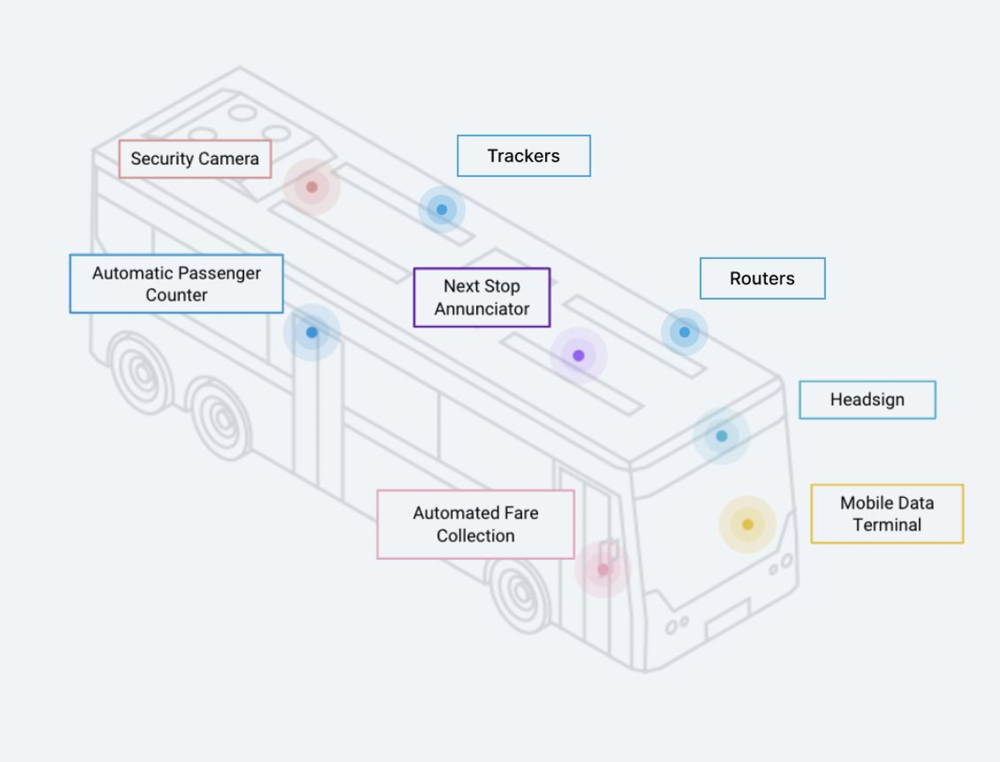
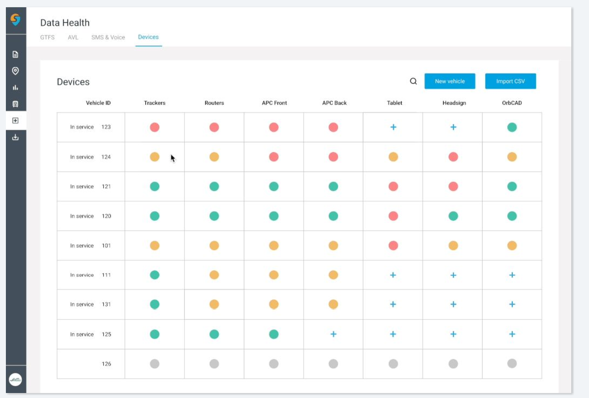
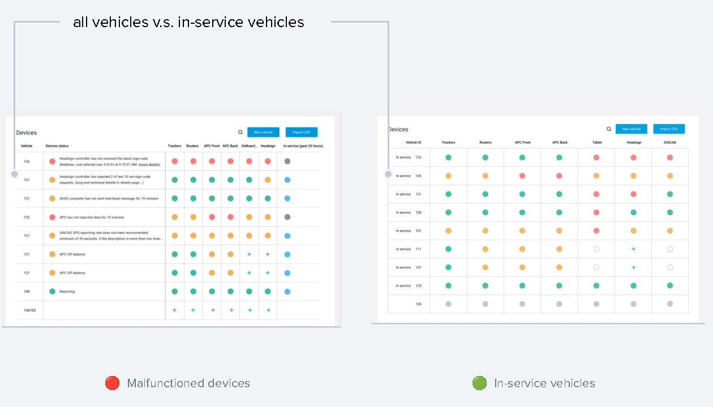

I designed a 0-to-1 device-status monitoring dashboard so transit IT could spot and investigate failing in-vehicle devices without waiting on a daily paper report.
Ownership
Product designer
Data Monitor Team
Team
Cross-functional team of 5
PM, TPM, eng manager, engineer
Timeline
May–June 2022
Shipped as a 0-to-1 MVP
Investigation time12–24 hrsdown from 30+ hours per device issue
Support inbound−20%device-issue inbound to the internal team
The internal goal was under 12 hours — the miss, and what it taught, is covered in Impact.
Problem
One report, filled out by hand, was the whole signal.
Transit agencies had no reliable way to see which in-service vehicle devices were failing. IT depended on bus operators submitting a daily maintenance report, and monitoring was spread across multiple platforms.
For many small and medium agencies there wasn’t even a formal report. Outages on GPS trackers or headsigns got reported by word of mouth. The cost landed on Swiftly’s own Client Success team: almost 40% of their time went to fielding inbound about device issues. Investigating a single device issue took 30+ hours.
“As an IT at Capmetro, I want to feel confident that I know which in-service vehicle devices require my attention so that we can troubleshoot quickly without interrupting services and have better data for future prediction (e.g. arrival time).”
Existing experience

Before: eight-plus devices per vehicle to keep alive, and the only failure signal was a hand-filled daily report.
After: live monitoring

After: a live Data Health device-status view replaced the daily report — device state per vehicle, in one place.
Process
Two constraints reframed the direction.
Before designing, I mapped how device-related data actually traveled through an agency — what a day at a transit agency looks like end to end. That surfaced two constraints that reshaped the direction:
Agency size varies widely. Many small and medium agencies don’t run a formal reporting process at all — outages travel by word of mouth. A design built only around “make the daily report better” would miss them.
Back-end diagnostic depth is limited. The team didn’t have rich data on why a device failed, only that it had, which ruled out a design that promised deep automated diagnosis.
Together these pushed the solution away from “a better report” and toward a real-time, triage-first status view: don’t over-promise diagnosis the data can’t support, make it instantly obvious which vehicles need attention right now, and let IT take it from there.
If IT can see device status transparently in one place, they will investigate and troubleshoot with more confidence, and stop routing that work through Client Success.
Mapping a full day at an agency, every role from operator to Client Success, surfaced where device reporting broke down. Opens full size.
Solution
Four shipped decisions.
One live view replacing the daily report. Moved from a paper daily maintenance report across multiple platforms to immediate, in-product device troubleshooting.
Triage-first information hierarchy. The first column leads with the vehicle’s in-service status, so IT sees what needs attention before any device detail — triage before diagnosis.
“We considered the common F-shaped reading pattern for English-speaking users. The first column prioritizes task triage, with the vehicle’s in-service status being the most critical element.”
Considered
Icon-only vs. a color legend for device status.
Chose
A color legend over icon-only status.
Because
Status stays legible to IT regardless of icon familiarity — weighed against how much visual complexity a fast-scanning ops audience could absorb.
Considered
“Should we prioritize monitoring or investigating?”
Chose
Hover to monitor, click to investigate.
Because
Glanceable status stays the default mode; going deeper into a device is optional, not a forced navigation.
Shipped: information hierarchy

Weighing an all-vehicles view against an in-service one: leading the first column with in-service status put triage before diagnosis, F-pattern first.
Impact
Investigation time fell. The goal wasn’t met.
Investigation time12–24 hrsdown from 30+ hours per device issue
Support inbound−20%device-issue inbound to the internal team
Internal goalNot mettarget was under 12 hours
The internal goal of under 12 hours was not met. That’s an honest result, and it produced the most useful learning of the project: IT teams triage differently, so a single investigation-time target measured the wrong thing.
Beyond the metrics: the tool improved organizational scalability, and the team credited the project with shifting its working culture from engineering-led to design-led.
Learnings
Measure the right thing.
Measure the right thing.A one-size-fits-all investigation-time target hid real variation between agencies.
Look beyond the interface.Invest in micro-interactions, and hold the design to WCAG accessibility standards.
Ask the consequence question.Product thinking: what happens if we don’t solve this right now.